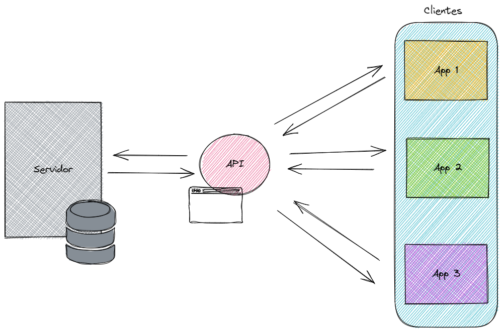

Hola!!!
Gracias por estar por estos lados nuevamente.
Con este artículo pretendo iniciar una serie de tutoriales para enseñar a consumir datos desde una API. No tengo claro cuántos serán en total, pero como siempre, deseo hacerlo muy de a poco y simples, de modo que puedas sentirte cómodo/a al final de todo.
Para estos tutoriales usaré mayormente Python (versión 3.10), pero recuerda que más allá del lenguaje, lo importante es comprender la lógica que está detrás y los fundamentos de programación. El lenguaje no es más que una herramienta y si bien la sintaxis puede variar (la forma en que se escribe el código), si puedes entender cómo funciona, te será muy simple adaptarlo a tu lenguaje favorito.
Ok!!
Entonces partamos…
¿Por qué aprender a usar una API?
Si estás partiendo en la programación y en análisis de datos, de seguro que te has trabajado con el típico dataset iris o el de los autos jajaja. Con unos clásicos.
También es posible que estés usando archivos Excel para analizarlos o algunos CSV.
La cosa es que todos esos datos están ordenados y en formatos más o menos fáciles de trabajar. Pero en la vida real, la historia es muy distinta. Te encontrarás con ese tipo de archivos, pero actualmente la forma más común de interactuar con datos es de otra forma y lo es usando las API.
Es un mundo que debes estudiar, pues tarde o temprano te vas a ver en la necesidad de trabajar usando una API. No es tan complejo, pero requiere de ciertos conocimientos y de práctica.
Si me preguntas, a día de hoy, el saber de API es una cosa básica, al menos, el saber hacer solicitudes y manipular los datos de respuesta.
Tranquilo/a!!!
Veremos todo es de a poco.
¿Qué es una API?
De forma simple, podemos entender a un API como una forma en que 2 sistemas informáticos se comunican entre ellos. Para poder hacerlo, es necesario que estos sistemas “hablen el mismo lenguaje” para que se puedan entender. Con lenguaje no me refiero a lenguaje de programación, sino a un conjunto de reglas y protocolos que son conocidos y acordados por ambas partes. Es como hablar con alguien. Si vas a una tienda y quieres comprar una bebida, te acercas al vendedor y le dices: “Hola!! Me da una bebida en lata, por favor”. Si todo anda bien, el vendedor te va a preguntar cuál bebida quieres y te indicará las que tiene disponibles. Tu eliges la que gustes y la compras. Esto que parece básico y trivial, para las computadoras no es tan simple, ni trivial. Deben existir una serie de acuerdos y formas de comunicación para que las partes se logren entender. Imagina que vuelves al mismo local para comprar otra bebida, pero esta vez se lo pides de esta forma: “Witam, czy mogę prosić o napój z puszki!”. Seguramente, el vendedor te va a mirar con una cara media rara, con cara de WTF! 🥴 Y es que se lo pediste en polaco!! Claro, le pediste una bebida en lata, igual que antes, pero esta vez en un idioma que él no entiende. Eso hace que no logres obtener lo que quieres. Con las API´s pasa lo mismo. Ambas partes deben entenderse para poder comunicarse y lograr una comunicación entre ellas. Para eso están los protocolos y definiciones que te mencioné hace un rato.
API? API significa “interfaz de programación de aplicaciones” (del inglés “Application Programming Interface”), para que lo tengas presente.
La comunicación entre las partes funciona como una pregunta (solicitud o query) y una respuesta. Como el ejemplo de las bebidas.
Ahora, las partes tienden a llamarse servidor y cliente, donde el cliente es quien hace la solicitud y el servidor es el que responde. Piensa en el servidor como la base de datos que contiene (y almacena) los datos y en los clientes como las páginas web, aplicaciones de teléfonos o programas que consumen los datos de esos servidores. Habitualmente las personas acceden a los datos desde los clientes, pero también se puede hacer directamente a los servidores. En eso trabajan los ingenieros de datos o backend. Aunque eso es otro tema.
Las API pueden funcionar de cuatro maneras diferentes, según el momento y el motivo de su creación:
SOAP
RPC
WebSocket
REST
Para efectos de esta serie de tutoriales, usaré la API REST, que tiende a ser una de las más comunes y con la que te vas a encontrar frecuentemente en muchas de las aplicaciones, en especial, en las web.
En las API REST, el cliente envía las solicitudes al servidor como datos. El servidor utiliza esta entrada del cliente para iniciar funciones internas y devuelve los datos de salida al cliente. Una API REST es una API que cumple los principios de diseño del estilo de arquitectura REST o transferencia de estado representacional. También se llaman a las API REST como API RESTful.
Este dato es importante…
Las API REST no son un protocolo de comunicación en si mismo, sino una arquitectura de diseño. Esta arquitectura está plasmada en la tesis de Roy Fielding, “Architectural Styles and the Design of Network-based Software Architectures”, en donde se señala que las API son RESTful siempre que cumplan con las 6 limitaciones principales de un sistema RESTful:
Arquitectura cliente-servidor: la arquitectura REST está compuesta por clientes, servidores y recursos; y administra las solicitudes con HTTP.
Sistema sin estado: el contenido de los clientes no se almacena en el servidor entre las solicitudes. En su lugar, la información sobre el estado de la sesión está en posesión del cliente.
Capacidad de almacenamiento en caché: el almacenamiento en caché elimina la necesidad de algunas interacciones cliente-servidor.
Sistema en capas: las interacciones cliente-servidor pueden estar mediadas por capas adicionales. Estas capas pueden ofrecer funcionalidades adicionales, como equilibrio de carga, cachés compartidos o seguridad.
Disponibilidad del código según se solicite (opcional): los servidores pueden ampliar las funciones de un cliente transfiriendo código ejecutable.
Interfaz uniforme: esta limitación es fundamental para el diseño de las API de RESTful.
Fuente: https://www.redhat.com/es/topics/api/what-are-application-programming-interfaces

Para no dejar de mencionarlo, aunque realmente no lo veremos acá, es que este tema de la comunicación entre servidores y clientes es tan relevante (pero MUY relevante) que hay muchas personas y grupos trabajando en nuevos protocolos y formas de hacer la comuncación más rápida y segura. Un ejemplo de ello es GraphQL. Facebook desarrolló GraphQL y comenzó a utilizarlo en aplicaciones móviles en el 2012. En 2015, se habilitó la especificación de GraphQL como open source.
Funciones CRUD
Las API REST funcionan por medio de solicitudes HTTP y pueden ejecutar funciones típicas de bases de datos. Si estás familiarizado/a con SQL, de seguro ésto lo conoces. Si no tienes idea qué es SQL, deberías preocuparte si lo que haces es análisis de datos. Pero ese tema se escapa de este tutorial, pero lo veremos mas adelante.
Si te interesa aprender SQL (que deberías!!!!!!), en internet está repleto de cursos gratuitos, libros y videos de YouTube. Pero te recomiendo que veas un pequeño trozo del siguiente video (hasta el minuto 10, el link te lo dejé marcado desde donde empezar). Ese video no es de API propiamente tal, pero los conceptos de las funciones de bases de datos aplican perfectamente. Así que dale una mirada a esos minutos y sigue con el artículo.
Sigamos…
REST define un conjunto de funciones como GET, PUT, DELETE, etc. que los clientes pueden utilizar para acceder a los datos del servidor. Sin embargo, las GET (obtener) te las encontrarás por todas partes y son las que debes manejar sí o sí en una API. Es lo básico.
Por eso, en esta serie de artículos me dedicaré principalmente a este tipo de métodos.
Tipos de API
Otra forma de clasificar a las API es por las funciones que desarrollan, pudiendo ser privadas o públicas. Las privadas se usan al interior de las instituciones para conectar aplicaciones dentro de ella. Las públicas están, como sun nombre lo indica, abiertas a personas externas. En este último tipo, se pueden requerir claves o credenciales de acceso, o bien, pueden ser de libre acceso.
Estas credenciales de acceso pueden ser pricipalmente de 2 tipos:
Tokens de autenticación
Se utilizan para autorizar a los usuarios a hacer la llamada a la API. Los tokens de autenticación comprueban que los usuarios son quienes dicen ser y que tienen los derechos de acceso para esa llamada concreta a la API. Por ejemplo, cuando inicia sesión en el servidor de correo electrónico, el cliente de correo electrónico utiliza tokens de autenticación para un acceso seguro.Claves de API
Las claves de API verifican el programa o la aplicación que hace la llamada a la API. Identifican la aplicación y se aseguran de que tiene los derechos de acceso necesarios para hacer la llamada a la API en cuestión. Las claves de API no son tan seguras como los tokens, pero permiten supervisar la API para recopilar datos sobre su uso. Es posible que haya notado una larga cadena de caracteres y números en la URL de su navegador cuando visita diferentes sitios web. Esta cadena es una clave de la API que el sitio web utiliza para hacer llamadas internas a la API.
Fuente: https://aws.amazon.com/es/what-is/api/#seo-faq-pairs#how-to-secure-a-rest-api
Esto que acabamos de ver es super importante. Es necesario que aprendas a autenticarte en la consulta de la API, pues es muy frecuente que éstas estén protegidas por temas de seguridad, ya sea por un token o una clave.
En resumen
Vimos bastantes conceptos y fundamentos sobre las API, y que son necesario que tengas en tu mente. Es importante que entiendas cómo funcionan “por detrás”, al menos, desde lo básico.
Revisamos la importancia de conocer sobre las API.
Vimos qué son las API y cómo permiten que los sistemas se comuniquen.
Explicamos qué son los servidores y los clientes.
Mencionamos las funciones más clasicas de las API.
¿Qué se viene?
En el próximo artículo ya empezaremos a ver código de Python y veremos los primeros pasos para consumir una API.
Saludos!!! 🤗
Recuerda leer el resto de mis artículos.